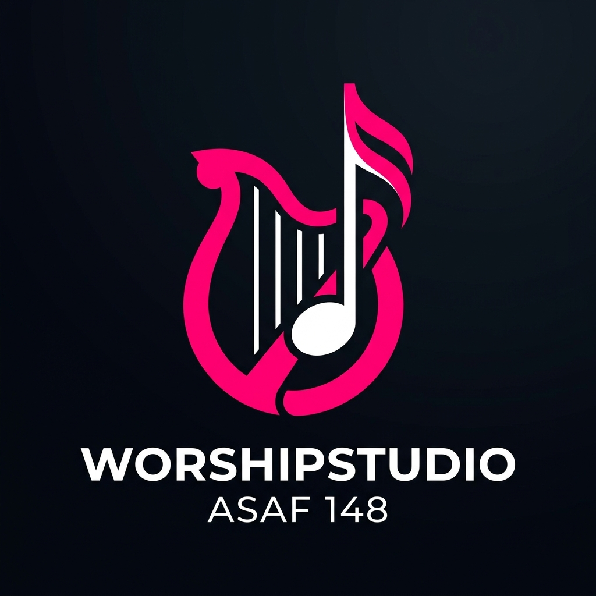
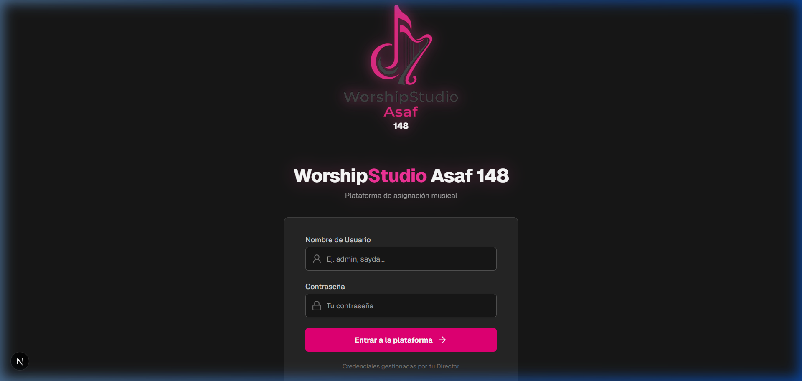
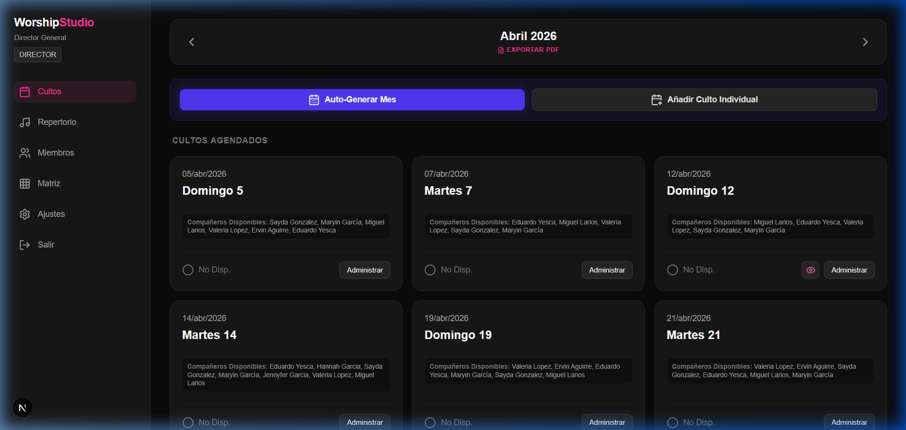
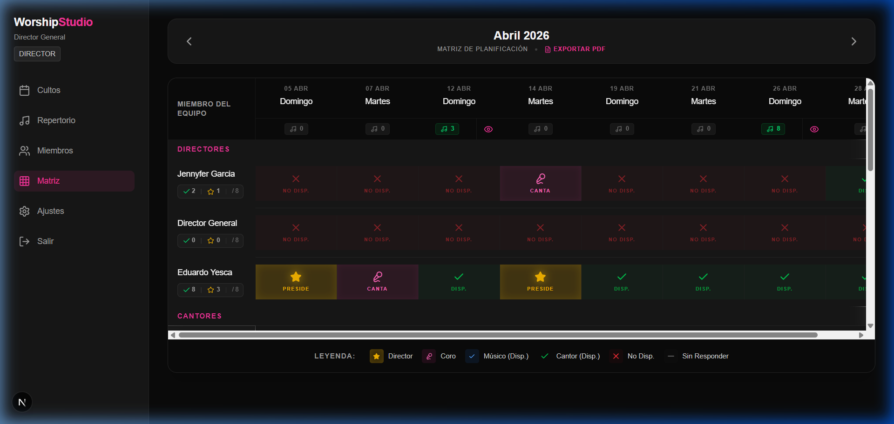
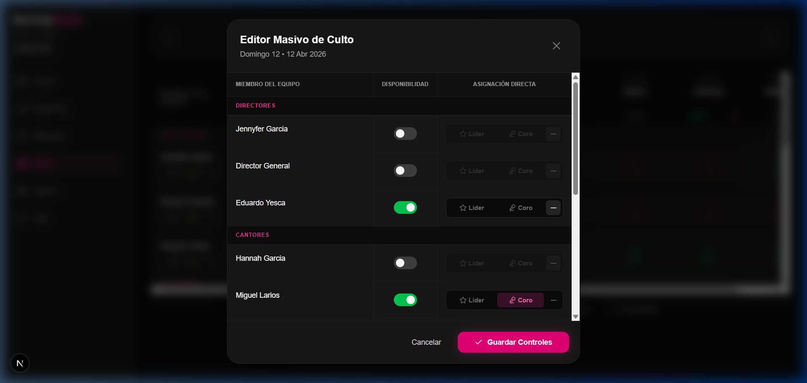
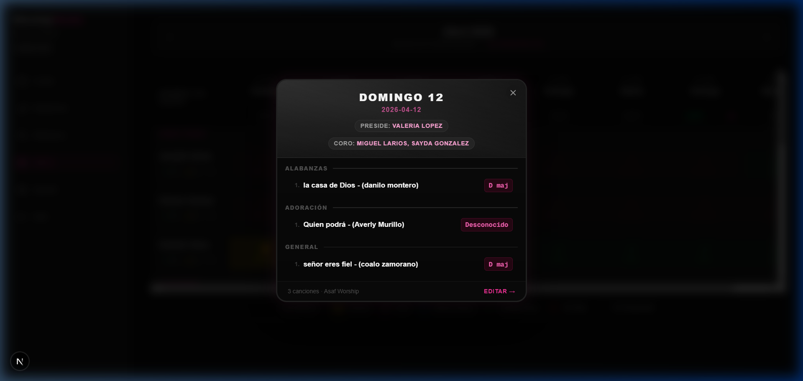

WorshipStudio Asaf 148 – Plataforma de Planificación Musical
Bienvenido a la nueva interfaz de acceso. Diseñada para ser rápida y segura en cualquier dispositivo.

El sistema adapta sus funciones según tu nivel dentro del equipo de alabanza:
| Nivel | Usuario | Acciones Principales |
|---|---|---|
| Director | Director General | Gestión total, Matriz de planificación y Miembros. |
| Cantor | Líder de Alabanza | Armado de setlists, disponibilidad y solistas. |
| Músico | Apoyo Musical | Consulta de bosquejos y disponibilidad. |
Gestiona todos los cultos del mes desde un panel centralizado. Visualiza disponibilidad del equipo de un vistazo.

Haz clic en el icono del ojo en cualquier tarjeta para ver el setlist sin salir del dashboard.
Descarga la planificación mensual completa desde el botón central en la cabecera.
La herramienta definitiva para Directores. Controla todo el mes en una sola cuadrícula de alta densidad.

Configura todo un culto en segundos gestionando la asistencia y roles de todo el equipo simultáneamente.

Presentación impecable del bosquejo musical para compartir por WhatsApp o visualizar en el ensayo.

Incluye tonos, artistas asignados y una estética moderna tipo "glassmorphism" que facilita la lectura bajo luces de escenario.
1. Confirmación: Marca tu asistencia en cuanto el Director genere el mes.
2. Estudio: Usa los enlaces de YouTube para ensayar la versión oficial.
3. Tonos: Verifica siempre que el tono guardado en el Repertorio sea el que usarás en el servicio.